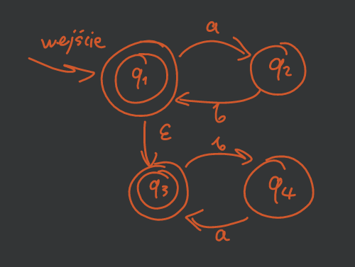
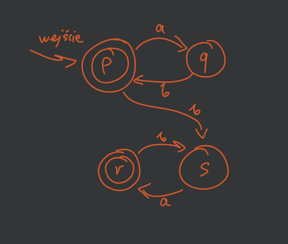
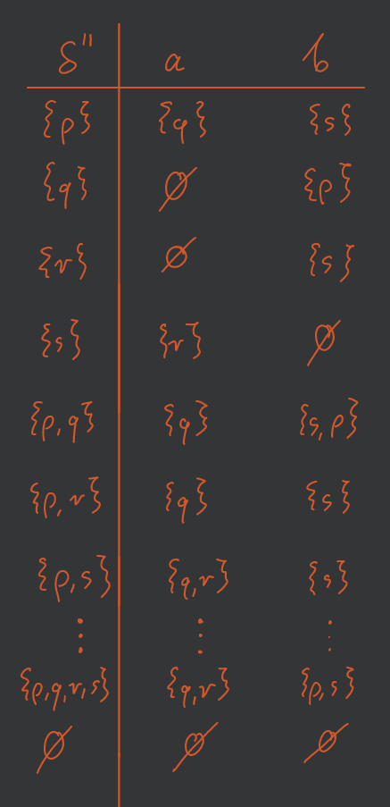
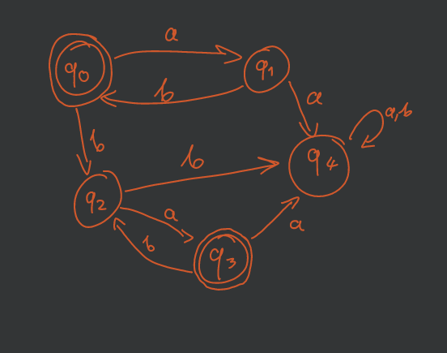
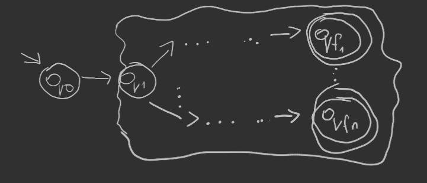
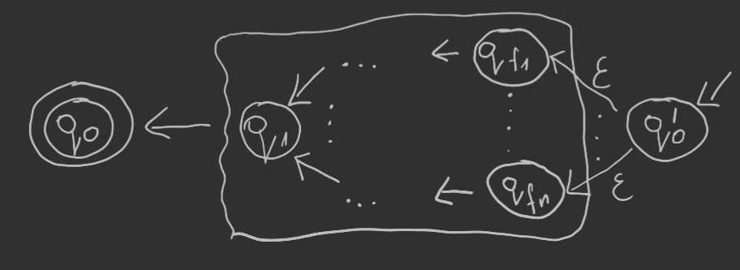

Zbuduj NFA \(M_1\) akceptujący język \((ab)^∗\) i \(M_2\) akceptujący język \((ba)^∗\). Połącz je \(\epsilon\)-przejściami tak, aby otrzymać NFA\(_\epsilon\) \(M\) akceptujący \((ab)^∗(ba)^∗\). Przekształć \(M\) do DFA i zminimalizuj.
Najpierw robimy NFA\(_\epsilon\):

Następnie zauważamy, że ze stanu \(p\) możemy przejść do stanu \(s\) przy pomocy \(\epsilon b\) co daje nam NFA:

Teraz stosujemy twierdzenia. Definiujemy nową funkcję przejść:

oraz nowy zbiór stanów akceptujących \(F'' = \left\{ \{p\}, \{r\}, \{p,q\}, \{p,s\}, \dots, \{p,q,r,s\} \right\}\) czyli zbiór wszystkich nowych stanów zawierających dawne stany akceptujące \(p\) i \(r\).
Teraz minimalizujemy powstały automat \(M''\) przy pomocy algorytmu.
Ostateczny automat minimalny:

Udowodnij, że język \(L = \left\{ x: x \in \{0,1\}^* \land |x|_0 \le |x|_1 \le 2 |x|_0 \right\}\) nie jest regularny.
«Lemat o pompowaniu»
Weźmy słowo \(z = 0^{n} 1^{n}\) dla \(n \ge 2\).
Podzielmy je według lematu o pompowaniu na części \(uvw\), rozpatrujemy wszystkie podziały spełniające warunki lematu: - \(|uv| \le n\) - \(|v| \ge 1\)
gdzie \(u\) oraz \(v\) składają się z samych zer.
„Pompujemy” część \(v\) (przynajmniej jedno zero):
bierzemy słowo \(z' = uv^{i}w\) np. dla \(i = 2\).
Bierzemy słowo \(z' = 0^{m}1^n\) dla \(m > n\) gdzie mamy więcej zer niż jedynek, co daje nam \(z' \notin L \implies L\) nie jest regularny.
Czy język \(\{0^{n!}: n \in \mathbb{N}\}\) jest regularny?
«Lemat o pompowaniu»
Weźmy słowo \(z = 0^{n!}\) dla \(n \ge 2\).
Podzielmy je według lematu o pompowaniu na części \(uvw\): - \(|uv| \le n\) - \(j = |v| \ge 1\) „Pompujemy” część \(v\):
bierzemy słowo \(z' = uv^2w\).
Wówczas mamy \[ 0^k (0^j)^2 0^{n!-k-j} = 0^{2j} 0^{n! - j} \] dla \(1 \le j \le n\) co daje długość \(|z'| = 2j + n! - j = n! + j\).
Dalej wystarczy zauważyć, że \[ \left(\forall 1 \le j \le n\right) \enspace n! < n! + j \le n! + n < n! + n \cdot n! = (n+1)! \] czyli \(n! + j\) jest zamknięta pomiędzy możliwymi wartościami, ale nie jest żadnej z nich równa, co daje \(z' \notin L \implies L\) jest nieregularny.
Czy język \(L = \{ww^Rx : w, x \in \{0,1\}^* \land w,x \neq \varepsilon\}\) gdzie \(w^R\) oznacza odwrócenie kolejności liter w słowie \(w\), jest regularny?
«Lemat o pompowaniu»
Język nie jest regularny.
D-d
Załóżmy, że \(L\) jest regularny. Wówczas istnieje DFA \(M = (Q, \Sigma, \delta, q_0, F)\), który go rozpoznaje. Niech \(n = |Q|\). Wybierzmy słowo \(z = (01)^n (10)^n 1111\), oczywiście \(z \in L\). Ponieważ automat ma tylko \(n\) stanów, to wczytując nasze słowo \(z\), które ma blok \((10)^n\) zaczynający się w stanie \(q_i\) a kończący w \(q_j\), któreś stany na ścieżce \(q_i\) do \(q_j\) muszą się powtórzyć. Ścieżka wygląda następująco: \[ q_i \dots q_k \dots q_k \dots q_j \]
Zatem słowo \(z\) uboższe o znaki, z którymi przechodziliśmy po pętli \(q_k \dots q_k\) również będzie przez automat \(M\) zaakceptowane. Jednak należy zauważyć, że to słowo nie może być postaci \(ww^R x\), więc nie należy do języka. Mamy sprzeczność.
Udowodnij, że jeśli dla pewnego języka \(L\) istnieje niedeterministyczny automat skończony rozpoznający go, to istnieje również niedeterministyczny automat skończony rozpoznający język \(L^R = \{w: w^R \in L\}\).
Niech NFA \(M = (Q, \Sigma, \delta, q_0, F)\) rozpoznaje \(L\):

Konstrukcja NFA\(_\epsilon\) \(M' = (Q', \Sigma, \delta', q_0', F')\) rozpoznającego \(L^R\):

gdzie: - \(Q' = Q \cup \{q_0'\}\) - \(F' = \{q_0\}\). - \[
\delta' = \begin{cases}
\left( \forall q \in Q \right) \enspace \delta'(q, a) = \{p: \delta(p,a) = q\}\\
\left( \forall q \in F \right) \enspace \delta'(q_0', \epsilon) = q\\
\end{cases}
\]
Przez to, że NFA i NFA\(_\epsilon\) są równoważne jesteśmy w stanie z NFA\(_\epsilon\) \(M'\) zrobić NFA \(M''\) akceptującą język \(L^R\).
Czy klasa języków regularnych jest zamknięta na sumę nieskończoną?
Nie jest zamknięta na sumę.
Rozważmy języki: \[ \begin{aligned} L_0 &= \{\epsilon\}\\ L_1 &= \{ab\}\\ L_2 &= \{aabb\}\\ &\vdots\\ L_i &= \{a^i b^i\} \end{aligned} \] gdzie każdy z nich jest regularny (każdy zawiera po prostu jedno słowo). Ale ich suma nie jest już regularna: \[ L = \bigcup_{i\ge0} L_i = \{a^nb^n: n \in \mathbb{N}\}. \] A dowód nieregularności takiego języka jest łatwo udowodnić z lematu o pompowaniu.
Udowodnij, że klasa języków regularnych jest zamknięta na operację różnicy (zbiorów).
Weźmy języki regularne \(L_1, L_2\), które mają swoje DFA: - \(M_1 = (Q, \Sigma, \delta, q_0, F)\) - \(M_2 = (Q', \Sigma, \delta', q_0', F')\)
Chcemy pokazać, że \(L_1 \setminus L_2\) to też język regularny (ma swoje DFA).
My pokażemy, że \(L_1 \cap \overline{L_2}\) jest regularny.
Najpierw konstruujemy automat \(M_2'\) rozpoznający \(\overline{L_2}\): \[ M_3 = (Q', \Sigma, \delta', q_0, \hat{F}) \] gdzie \(\hat{F} = Q'\setminus F'\).
Zatem automat \(M\) rozpoznający \(L_1 \cap \overline{L_2}\): \[ M = (Q'', \Sigma, \delta'', q_0'', F'') \] gdzie: - \(Q'' = Q \times Q' = \left\{ \{p,q\}: p \in Q, q\in Q' \right\}\) — iloczyn kartezjański zbiorów stanów \(M_1\) i \(M_3\) - \(q_0'' = \{q_0, q_0'\}\) - \((\forall p \in Q)(\forall q \in Q')(\forall a \in \Sigma) \enspace \delta''\left( \{p,q\}, a \right) = \left\{ \delta(p,a), \delta'(q,a) \right\}\) - \(F'' = \left\{ \{p,q\}: p \in F \land q \in \hat{F} \right\}\)